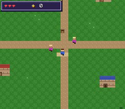

|
OpenSNES
Modern Open-Source SNES Development SDK
|
|
OpenSNES
Modern Open-Source SNES Development SDK
|

The SDK's modules composed into a playable RPG skeleton. Two things make it a template rather than a demo:
1. The map is a real Tiled map. res/town.tmj holds the terrain, the per-tile collision (each tile's attribute property), the entity positions (the Entities object layer: spawn, villagers, chest) and each villager's line of dialogue (a text property on the object). Adding a villager is a map edit, not a code edit. None of it is hardcoded — open the map in Tiled, edit it, re-run the generator, rebuild. The map is validated by the SDK's own tmx2snes converter.
2. A real bordered dialog box, and a HUD. Both are 9-slice panels on BG2 with their text on BG3 above — the classic SNES RPG window, with the layers stacking scene < panel < text. The HUD carries hearts and a purse; the purse goes up by 10 when you open the chest.
3. Two scenes. The town, and the inside of the blue-roofed house. A scene is a tileset + a palette + a tilemap + a collision map + entities, and the interior is its own Tiled map (res/house.tmj) with its own 16-colour palette — neither scene gives up colours for the other. Walking onto the door swaps all five; the host greets you with no button press.
| Input | Action |
|---|---|
| D-pad | walk (one tile per step) |
| A | talk to a villager (face it) / open the chest (step on it) |
| walk into the blue door | enter the house; the mat inside takes you back |
ROM mode: LoROM (project default).
Tile collision is the attribute property on each tileset tile (FF00 = solid, 0 = walkable). Entities are objects in the Entities layer, typed spawn, npc or chest. An npc blocks its tile (you talk face-to-face) and carries its dialogue in a text property; a chest does not block (you step onto it).
Run python3 gen_assets.py without --keep-map to regenerate the whole map from the script's layout.
town.tmj is a standard Tiled map, so the SDK's own converter reads it too — a useful check that the file is well-formed:
-Q writes the quadrant-ordered 64×64 tilemap this example scrolls with the background module, and -e writes the entities as C defines — byte-identical to what gen_assets.py produces. The generator still runs the conversion itself because it also builds the per-cell collision grid and marks the villagers' tiles blocked, which is game logic rather than map data; moving the rest onto the tool is a Makefile change.
console, dma, background, sprite, text, input, collision, panel